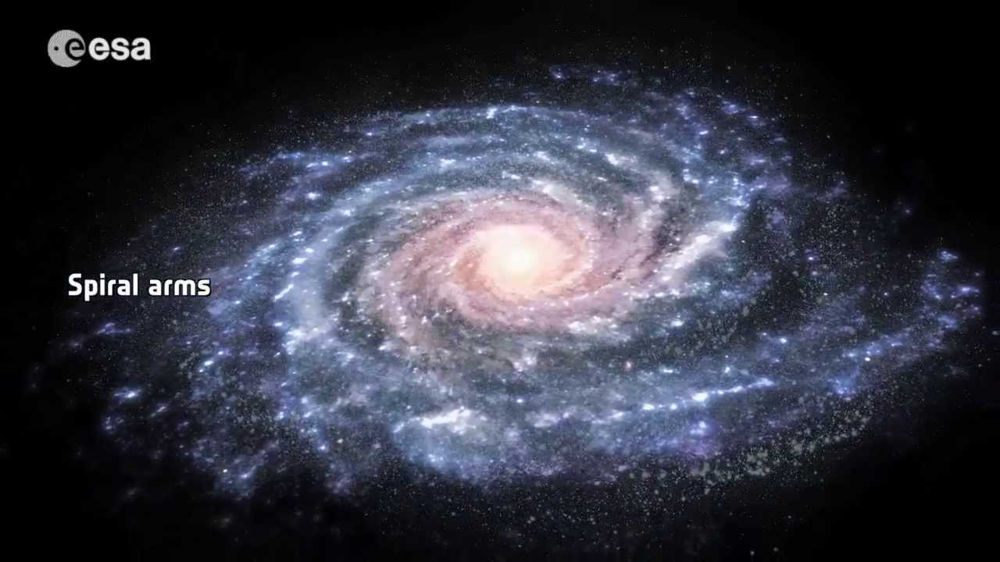
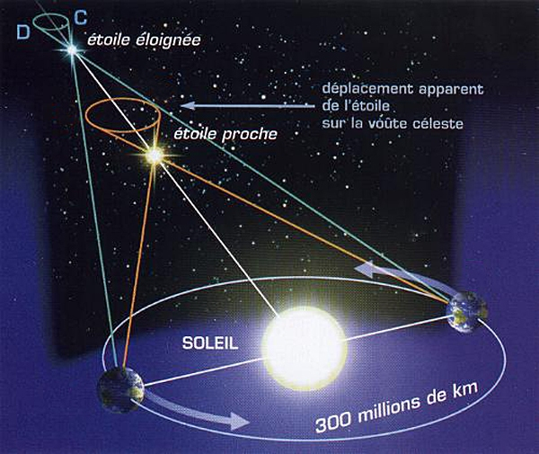

Une brève histoire du temps : Du big bang aux trous noirs — Stephen Hawking
[…] Si l’on regarde le ciel par une claire nuit sans lune, les objets les plus brillants que l’on apercevra seront certainement les planètes Vénus, Mars, Jupiter et Saturne. Il y aura aussi un très grand nombre d’étoiles, qui sont des Soleils semblables au nôtre mais beaucoup plus éloignés. Quelques-unes de ces étoiles fixes semblent modifier très légèrement leurs positions relativement les unes aux autres au fur et à mesure que la Terre tourne autour du soleil : elles ne sont pas vraiment fixes ! Mais c’est parce qu’elles sont relativement près de nous. Comme la Terre tourne autour du Soleil, nous les voyons depuis des positions différentes sur le fond des étoiles plus lointaines. C’est heureux, parce que cela nous permet de mesurer directement la distance de ces étoiles : plus elles sont proches de nous, plus elles semblent bouger. L’étoile la plus proche, Proxima du Centaure, est ainsi à environ quatre années-lumière (sa lumière met à peu près quatre ans pour atteindre la Terre), ou à environ quarante mille milliards de kilomètres. La plupart des autres étoiles visibles à l’œil nu se tiennent en deçà de quelques centaines d’années-lumière de nous. Notre Soleil, par comparaison, n’est, qu’à huit petites minutes-lumière ! Les étoiles visibles semblent occuper l’ensemble du ciel nocturne, mais elles sont particulièrement concentrées dans une bande que nous appelons la Voie Lactée.
 > Représentation de la Voie Lactée (galaxie spirale) issue du document de l’ESA : [https://www.youtube.com/watch?v=4SYTh5mAv0E](https://www.youtube.com/watch?v=4SYTh5mAv0E). Il pourra aussi être profitable de consulter le (long) document suivant : [https://www.youtube.com/watch?v=PkoE8SSY5ys](https://www.youtube.com/watch?v=PkoE8SSY5ys)[…] Notre représentation moderne de l’univers date de 1924, lorsque l’astronome américain Edwin Hubble démontra que notre Galaxie n’était pas unique en son genre et qu’il y en avait beaucoup d’autres, avec de grandes zones de vide entre elles. Pour le prouver, il lui fallut déterminer les distances de ces autres galaxies situées si loin de nous que, contrairement aux étoiles proches, elles nous apparaissent réellement fixes. Hubble fut donc forcé de recourir à des méthodes indirectes. La brillance apparente d’une étoile dépend de deux facteurs : la quantité de lumière qu’elle rayonne (sa luminosité), et sa distance par rapport à nous. Pour les étoiles proches, nous pouvons mesurer leur brillance apparente et leur distance, et déterminer ainsi leur luminosité. Réciproquement, si nous connaissons la luminosité d’étoiles appartenant à d’autres galaxies, nous pourrions trouver leur distance en mesurant leur brillance apparente. Hubble remarqua que certains types d’étoiles avaient toujours la même luminosité à condition qu’elles soient suffisamment proches pour qu’on puisse la mesurer ; donc, affirmait-il, si nous trouvions des étoiles du même type dans une autre galaxie, nous pourrions supposer qu’elles ont la même luminosité — et ainsi calculer la distance de cette galaxie. Si nous pouvions le faire pour un certain nombre d’étoiles dans une même galaxie, nos calculs débouchant toujours sur une même distance, nous pourrions honnêtement avoir confiance dans notre estimation de distance de cette galaxie. Edwin Hubble effectua les calculs pour neuf galaxies différentes. Nous savons maintenant que notre Galaxie n’est que l’une des centaines de milliards de galaxies que nous montrent les télescopes modernes, chaque galaxie elle-même contenant quelques centaines de milliards d’étoiles (cf. figure).
[…] Les étoiles sont si loin qu’elles semblent n’être que des têtes d’épingles de lumière. Nous ne pouvons voir ni leur grandeur ni leur forme. Aussi, comment pouvons-nous à distance distinguer différents types d’étoiles ? Pour la grande majorité d’entre elles, il n’y a qu’un trait caractéristique que nous puissions observer : la couleur de leur lumière. Newton a découvert que si la lumière venant du Soleil traversait un morceau de verre de forme triangulaire – un prisme – elle se décomposait en ses couleurs de base (son spectre), comme dans l’arc-en-ciel. En braquant un télescope sur une étoile individuelle ou sur une galaxie, on peut, de façon similaire, observer le spectre de la lumière venant de cette étoile ou de cette galaxie. Des étoiles différentes ont des spectres différents, mais la brillance relative des différentes couleurs est toujours exactement ce que l’on s’attend à trouver dans la lumière émise par un objet porté à incandescence. (En fait, la lumière émise par tout objet opaque porté au rouge a un spectre caractéristique qui ne dépend que de sa température : un spectre thermique. Cela signifie que nous pouvons parler de température stellaire à partir d’un spectre de lumière d’étoiles.) De plus, nous trouvons que certaines couleurs très spécifiques sont quelque fois absentes ; ces couleurs manquantes peuvent varier d’une étoile à une autre. Depuis que nous savons que chaque élément chimique absorbe un ensemble très caractéristique de couleurs spécifiques, il suffit de comparer ces dernières à celles qui manquent dans les spectres stellaires pour déterminer avec exactitude les éléments présents dans l’atmosphère de l’étoile observée.
Dans les années vingt, lorsque les astronomes commencèrent à regarder les spectres des étoiles d’autres galaxies, ils remarquèrent quelque chose de très curieux : il s’y trouvait bien les mêmes ensembles caractéristiques de couleurs manquantes que dans notre propre Galaxie, mais ces derniers étaient tous décalés d’une même quantité relative vers l’extrémité rouge du spectre. Pour saisir les implications de cela, nous devons d’abord comprendre l’effet Doppler. Comme nous l’avons vu, la lumière visible consiste en fluctuations, ou ondes, dans le champ électromagnétique. La fréquence (ou le nombre d’ondes par seconde) de la lumière est extrêmement élevée, allant de quatre à sept cent mille milliards d’ondes par seconde. Les différentes fréquences de lumière sont ce que l’œil humain voit sous forme de couleurs différentes, les fréquences les plus basses se situant à l’extrémité rouge du spectre, et les plus hautes à l’extrémité bleue. Maintenant, imaginez une source de lumière à distance constante de nous, comme une étoile, émettant des ondes de lumière à fréquence constante. Évidemment, la fréquence des ondes que nous recevrons sera la même que celle à laquelle ces ondes auront été émises […]. Supposons maintenant que cette source se mette à se déplacer vers nous. Quand elle émettra la crête d’onde suivante, elle sera plus proche de nous, et le temps que la crête d’onde mettra pour nous atteindre sera plus court que lorsque l’étoile ne bougeait pas. Cela signifie que l’intervalle entre deux crêtes d’ondes successives sera plus bref, et que le nombre d’ondes que nous recevrons chaque seconde (c’est-à-dire la fréquence) sera plus élevé que lorsque l’étoile était immobile. De même, si la source s’éloigne de nous, la fréquence des ondes que nous en recevrons sera plus basse. Dans le cas de la lumière, cela signifie que les étoiles qui s’éloignent de nous auront donc leur spectre décalé vers l’extrémité rouge du spectre – « décalage vers le rouge » – et celles qui se rapprochent, un spectre décalé vers le bleu. Cette relation entre la fréquence et la vitesse, l’effet Doppler, est une expérience que l’on peut faire tous les jours. Écoutez une voiture passant dans la rue : tant que la voiture approche, son moteur fait un bruit plus aigu (correspondant à une fréquence plus élevée des ondes sonores), et quand elle passe devant nous et s’éloigne, il fait entendre un bruit plus grave. Le comportement des ondes lumineuses ou radio est le même. Et jusqu’à la police qui fait usage de l’effet Doppler pour contrôler la vitesse des véhicules en mesurant la fréquence d’impulsion d’ondes radio qu’ils réfléchissent !
Dans les années qui ont suivi la preuve de l’existence d’autres galaxies, Hubble répertoria leurs distances et observa leurs spectres. À ce moment-là, la plupart des gens pensaient que les galaxies se mouvaient au hasard ; aussi s’attendait-on à trouver autant de spectres décalés vers le bleu que vers le rouge. La surprise fut considérable lorsqu’on constata que la plupart des galaxies semblaient décalées vers le rouge : presque toutes s’éloignaient de nous ! Plus surprenantes encore furent les conclusions que Hubble publia en 1929 : l’ampleur du décalage vers le rouge d’une galaxie n’était pas le fait du hasard, il était proportionnel à la distance nous séparant de cette galaxie. En d’autres termes, plus la galaxie était loin, plus elle s’éloignait vite de nous ! L’univers ne pouvait donc pas être statique, comme tout le monde le croyait auparavant, et il était même en expansion, la distance entre les différentes galaxies augmentant en permanence. Cette découverte d’un univers en expansion fut l’une des grandes révolutions intellectuelles du XX
Exploitation du document
- Qu’est-ce qui différencie les étoiles et les planètes, du point de vue de l’émission de la lumière ?
Réponse
Les planètes ne sont pas des corps suffisamment chauds pour émettre de la lumière (plus précisément ondes électromagnétiques) dans tout le domaine spectral et en particulier dans le domaine visible ; les planètes n’émettent que dans les IR.
Si on voit les planètes c’est parce qu’elles réfléchissent la lumière des étoiles (en particulier du Soleil).
Les étoiles émettent leur propre lumière (plus précisément ondes électromagnétiques) dans tout le domaine spectral grâce à l’énergie dégagée par les réactions de fusion nucléaire qui se déroulent en leur sein (à l’exception des naines brunes).
- Qu’est-ce que l’« année-lumière » ?
Réponse
Une année-lumière est la distance parcourue par la lumière, à la célérité constante $c_0$, dans le vide, pendant une année.
- Pourquoi n’est-il pas possible de mesurer directement la distance à laquelle se trouvent toutes les étoiles ?
Réponse
Les mesures directes s’appuient essentiellement sur des méthodes de triangulation ou parallaxe (En savoir plus).
Ces méthodes consistent à viser un objet depuis deux positions différentes et à en déduire la distance à l’objet.

Plus l’étoile est éloignée, plus les rayons issus de cette étoile arrivent parallèles les uns aux autres. Aucune mesure d’angle n’est alors possible.
En conclusion, plus la distance entre les deux positions de visée est grande, plus lointaine peut être l’étoile. La distance de visée maximale est environ égale à $\pu{3e8 km}$, c’est à dire aux positions de la Terre séparées de 6 mois.
- Décrire en quoi consiste une mesure indirecte de la distance à laquelle se trouve une étoile.
Réponse
La brillance d’une étoile dépend de sa luminosité et de sa distance. La luminosité, elle dépend du type de l’étoile.
Pour relier ces grandeurs, on se sert des étoiles les plus proches dont on peut déterminer directement la distance : connaissant leur type, donc leur luminosité, et leur distance, on mesure leur brillance.
Une fois la relation entre ces trois grandeurs établie, on peut mesurer, pour n’importe quelle étoile visible, la brillance de cette étoile et sa luminosité. On en déduit alors la distance.
- D’après le texte, comment définit-on le type d’une étoile ?
Réponse
Pour déterminer le type d’une étoile on utilise essentiellement le diagramme de Hertzsprung-Russell : on y fait apparaître des relations entre la luminosité et la température de couleur des étoiles.
- Rappeler ce que sont les spectres d’émission et d’absorption d’un élément chimique.
Réponse
Un élément chimique excité peut se désexciter (retourner dans son état fondamental) en émettant de la lumière. Comme les énergies sont quantifieés dans un atome (ou ion), toutes les longueurs d’ondes ne sont pas possibles pour la lumière émise.
En fait $\nu = \dfrac{\Delta E}{h}$ où $\nu$ est la fréquence de l’onde, $\Delta E$ la différence d’énergie entre les deux niveaux d’énergie considérés et $h$ la constante de Planck. On appelle spectre d’émission le résultat de l’analyse de la lumière émise par une espèce chimique lorsqu’elle se désexcite.
Lorsqu’une espèce chimique est éclairée par une lumière, elle peut absorber certaines longueurs d’onde de cette lumière. En fait, elle peut absorber les mêmes longueurs d’onde qu’elle est capable d’émettre. On appelle spectre d’absorption le résultat de l’analyse de la lumière absorbée par une espèce chimique.
- Quelle loi, accompagne une lumière dont le spectre est un « spectre thermique » ?
Réponse
La loi qui donne la répartition de l’intensité du rayonnement en fonction de sa longueur d’onde est la loi de Planck.
- Expliquer ce qu’entend l’auteur lorsqu’il écrit : « il s’y trouvait bien les mêmes ensembles caractéristiques de couleurs manquantes […] mais ces derniers étaient tous décalés d’une même quantité relative vers l’extrémité rouge du spectre ».
Réponse
Les spectre de la lumière issue des étoiles est un spectre thermique : toutes les radiations (longueurs d’onde) sont présentes avec une intensité plus ou moins importante en fonction de la température de l’étoile. Cependant, lorsqu’on examine de plus près un tel spectre, on constate que de fines raies noires se détachent sur ce fond coloré (spectre de Fraunhofer). Ces raies correspondent à l’absorption de la lumière par les éléments chimiques se trouvant dans la couche externe de l’étoile (chromosphère pour le Soleil). Un spectre d’absorption est caractéristique de l’élément chimique considéré.
L’auteur nous apprend que dans le spectre des étoiles on retrouve bien les spectres des éléments (positions relatives des différentes raies) mais que les longueurs d’onde sont décalées (vers le rouge la plupart du temps) par rapport à celles que l’on mesure sur Terre.
- Donner la relation qui existe entre la fréquence et la longueur d’onde d’une onde progressive sinusoïdale.
Réponse
$\lambda = c \, T$ et $T = 1 / f$, donc $\lambda = \dfrac{c}{f} \Leftrightarrow f = \dfrac{c}{\lambda}$.
- Décrire ce qu’est « l’effet doppler ».
Réponse
L’« l’effet doppler » est le décalage de fréquence d’une onde observé entre les mesures à l’émission et à la réception lorsque la distance relative entre l’émetteur et le récepteur varie au cours du temps.
- Pourquoi « trouver autant de spectres décalés vers le bleu que vers le rouge » aurait prouvé « que les galaxies se mouvaient au hasard » ?
Réponse
On apprend dans le texte que lorsqu’un émetteur de lumière s’éloigne, les longueurs d’onde de la lumière reçue sont décalées vers le rouge. À l’opposé, lorsqu’un émetteur de lumière se rapproche les longueurs d’onde de la lumière reçue sont décalées vers le bleu.
Si le mouvement des galaxies était totalement aléatoire, il y aurait autant de galaxies qui s’éloigneraient globalement de nous que de galaxies qui se rapprocheraient globalement de nous. Nous devrions donc trouver autant de lumières avec un décalage vers le bleu que vers le rouge.
- On demande à un élève de résoudre le problème suivant : « Une voiture roule à $\pu{20,0 m.s−1}$ et émet un son de sirène de fréquence $\pu{600 Hz}$. Déterminer la fréquence perçue par un observateur immobile alors que la voiture s’approche et lorsqu’elle s’éloigne. »
On considère que la célérité du son est $c = \pu{340 m.s−1}$.
Comme aide à la résolution, on fournit à l’élève les deux formules suivantes : $$ f = \dfrac{f_s}{1 - \dfrac{v_s}{c}} \text{ et } f = \dfrac{f_s}{1 + \dfrac{v_s}{c}} $$ sans préciser à quelle situation chacune s’applique ($f$ est la fréquence perçue, $f_s$ la fréquence propre de la source, $v_s$ la vitesse de la source et $c$ la célérité du son).
À partir d’un raisonnement à expliciter, répondre à la question posée à l’élève.
Réponse
- Puisque la voiture s’approche de l’observateur la fréquence $f$ du son perçu est plus grande que la fréquence $f_s$ du son émis. Après étude des deux formules proposées seule la première donne $f > f_s$ ; c’est celle qu’il faut choisir.
- A.N. $ f = \dfrac{ \pu{600 Hz} }{1 - \dfrac{ \pu{20,0 m.s-1} }{ \pu{340 m.s-1} }} = \pu{637,7 Hz} $ soit ${638 Hz} $.
- Lorsqu’un émetteur émet une onde sonore périodique de fréquence $f_s$ en se déplaçant à la vitesse $v_s$ vers un récepteur immobile, ce dernier perçoit une onde sonore périodique de fréquence $f$ telle que
$$
f = \dfrac{f_s}{1 - \dfrac{v_s}{c}}
$$
Si l’onde émise est sinusoïdale, la relation précédente peut être exprimée à l’aide des longueurs d’onde.
Donner cette expression en fonction des longueurs d’onde.
Réponse
$f = \dfrac{f_s}{1 - \dfrac{v_s}{c}}$. Or $c = f_s\, \lambda_s$ et $c = f\, \lambda$, donc si on substitue les fréquences par les longueurs d’onde $\dfrac{c}{\lambda} = \dfrac{1}{1 - \dfrac{v_s}{c}}\, \dfrac{c}{\lambda_s}$. On en déduit immédiatement que $$\lambda = \lambda_s \, \left( 1 - \dfrac{v_s}{c} \right)$$
Lorsque l’émetteur se rapproche $f > f_s$, la relation juste démontrée indique qu’alors $\lambda < \lambda_s$.
Lorsque l’émetteur se rapproche, la fréquence du signal reçu est plus grande, sa longueur d’onde plus petite (décalage vers le bleu pour la lumière).
- Ce document présente seulement un court extrait du livre et laisse peut-être penser que l’expansion de l’Univers est due au déplacement des galaxies, déplacement d’autant plus rapide qu’elles sont situées loin de nous. En fait, ces galaxies ne se déplacent pas, c’est l’espace lui-même qui évolue.
En considérant que l’espace est un milieu à deux dimensions, semblable à un ballon de foot que l’on gonfle, expliquer pourquoi on peut avoir l’impression que les galaxies ont le mouvement décrit au début de cette question.
Réponse
L’idée ici est vraiment d’imaginer un ballon que l’on gonfle : son volume augmente, tout comme sa surface externe. Si on imagine des motifs sur cette surface, ils se déplacent alors et s’éloignent même les uns des autres. Il en est de même pour des points à l’intérieur de ce ballon.